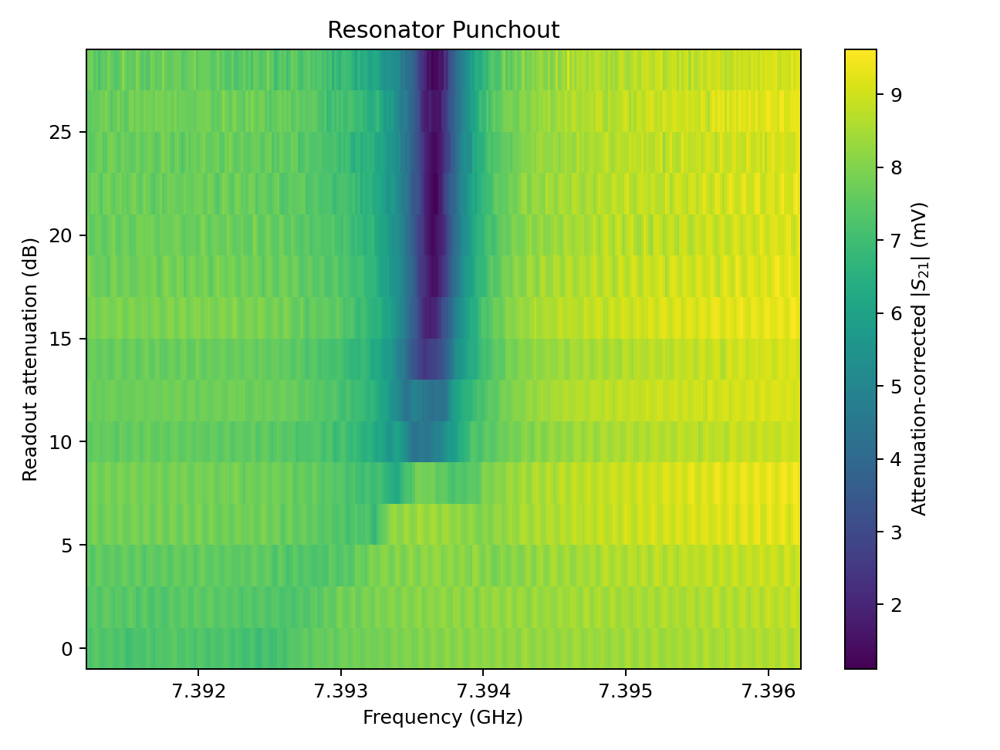

Resonator Punch Out
Find a readout power that still “sees” the qubit: raise power and watch the resonator dip walk from dressed to bare — until you punch out and lose |0⟩/|1⟩ discrimination.
Instructions
- Start at low readout power. Notice the resonator dip sits at the qubit-shifted (dressed) frequency — evidence the qubit is coupled.
- Raise the readout power slowly (the walk is the experiment). Watch the dip move toward the bare frequency, the resonator fill with photons, and the grip on the qubit weaken; read the regime callout and whether readout can still tell |0⟩ from |1⟩.
- Keep raising until punched out — readout is blind. Then lower power back into the dressed window: that is the power regime you’d use to read the qubit. Unlocking punched out also reveals Real lab data.
- Read the short heatmap primer, diagnose whether the punch-out heatmap is Dressed, Transitional, or Punched out (same labels as the live callout), then open the Ising Calibration playground section — ask about anything unclear, or confirm what you think is going on.
Keyboard: Tab to reach the power slider and Reset; arrow keys adjust power; Enter/Space activates Reset; Esc resets to low-power dressed start (lab unlock persists once earned).
What this calibration step is for
Already known: Resonator spectroscopy found the resonator frequency (the dip). You can drive and measure that resonator.
This step finds: The readout power to use when measuring a qubit — low enough to stay dressed (state-sensitive), not so high that you punch out and |0⟩/|1⟩ look the same. It also confirms a qubit is coupled to the resonator.
Controls
Move slowly — the walk is the experiment. Watch the dip shift as you raise power.
Primary visualization
Resonator spectrum
Guides stretched slightly for visibility (~1.2 MHz here; real lab gap is smaller).
Transmission magnitude versus frequency. The dip walks from the qubit-shifted frequency toward the bare frequency as readout power rises.
Dip at 7.3944 GHz
Photon fill & qubit grip
Readout resonator cavity filling with photons as power rises, with a coupling grip link to the qubit that thins and breaks at high power.
Strong grip · 2 photons
Results
Stay here (or nearby) for qubit readout: the resonator still feels |0⟩ vs |1⟩.
Yes — |0⟩ and |1⟩ each pull the resonator to a slightly different frequency, so a measurement can tell them apart.
High readout power fills the resonator with photons — too many photons break the qubit’s grip on the resonator frequency.
The power where punch-out occurs depends on the qubit–resonator coupling strength — not on “qubit quality.”
Real lab data — compare
This is a real Qblox punch-out heatmap: frequency on the x-axis, readout attenuation on the y-axis (high attenuation at the top = low power; low attenuation at the bottom = high power). On real data the frequency walk is only a few tenths of a megahertz — look for a nearly vertical dark stripe that shifts slightly and gets much broader toward the bottom (high power / punched out). Your spectrum above is scaled to that same window.

Real Qblox punch-out: dark stripe = resonance dip. Top (high attenuation) ≈ low power / dressed (narrow); bottom (low attenuation) ≈ high power / punched out (broader, slightly shifted).